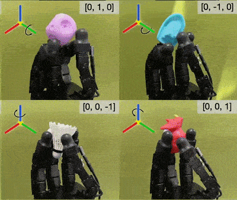
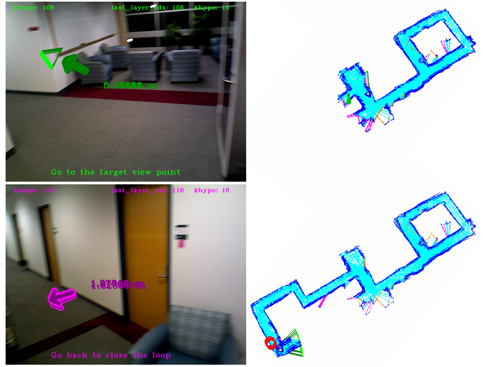

|
suddhus [at] gmail [dot] com I'm a research scientist at Boston Dynamics, where I work on machine learning for the Atlas humanoid robot. I earned my Ph.D. in Robotics from Carnegie Mellon University (CMU), advised by Michael Kaess. I was also a part-time researcher at FAIR (Meta), where I collaborated with Mustafa Mukadam. My thesis enabled robots to learn from interaction using vision and touch. I have a Masters in Robotics from CMU, and undergraduate from NIT Trichy. |

|

Updates
[Mar '24] |
I've moved to Greater Boston, working on the Atlas team at Boston Dynamics (hello). |
[Feb '24] |
I've defended my Ph.D., here's my talk and thesis! |
[Dec '23] |
The pre-print for NeuralFeels is out, read it here. |
[Aug '23] |
Our work RotateIt, led by Haozhi, was accepted to CoRL 2023. |
[April '23] |
Spending the summer as a research scientist intern at FAIR Menlo Park on visuo-tactile manipulation! |
[Dec '22] |
MidasTouch was showcased at CoRL 2022 with a live demo. |
Click for more updates
[Oct '22] |
Successfully passed my Ph.D. thesis proposal! |
[Sep '22] |
MidasTouch was accepted to CoRL 2022 as an oral. |
[Aug '22] |
We've extended iSDF for neural mapping with the Franka robot, code here. |
[May '22] |
Organized the Debates on the Future of Robotics Research workshop at ICRA '22 |
[April '22] |
Spending the summer at FAIR Pittsburgh working on pose tracking from touch |
[Jan '22] |
ShapeMap 3-D was accepted to ICRA 2022, with an open-source implementation. |
[Aug '21] |
Presented at the Tartan SLAM series on our working on perception for planar pushing, video here. |
[May '21] |
Tactile SLAM was the ICRA 2021 best paper in service robotics finalist! |
Research |

|
Neural perception with vision and touch yields robust tracking
and reconstruction for in-hand manipulation |
|  |
A visuotactile transformer gives us general dexterity
for multi-axis object rotation in the wild. |

|
Where's Waldo? but for robot touch: tracking a robot finger
on an object from geometry captured by touch. |

|
Online reconstruction of 3D objects from dense touch
and vision via Gaussian processes. |

|
Full SLAM from force/torque sensing for planar pushing:
combining a factor graph with an implicit surface. |

|
Balancing volumetric exploration and pose uncertainty
in 3D underwater SLAM via SONAR submap saliency. |
|  |
Active SLAM with multi-hypothesis state estimates
for robust indoor mapping with handheld sensors |


|
Dealing with refraction in underwater visual SLAM,
inspired by multimedia photogrammetry. |


|
We build an underwater platform comprising of stereo,
IMU, standard + structured lighting, and depth. |


|
Annual Meeting of the Lunar Exploration Analysis Group, Nov 2016
Tracking a lunar rover's kinematic state through self-perception
with a downward-facing fisheye lens. |

|
We understand free-hand sketches through human gaze
fixations based on visual saliency. |
Other projects

|
Extending iSDF to build real-time neural models
of tabletop scenes with the Franka Panda arm |

|
A deep network that beats humans at GeoGuessr,
trained on our 50States10K dataset |

|
Hierarchical task and motion planning for a 6-DOF robot arm,
to prepare yogurt parfaits! |

|
Reconstructing thin objects in a scene through an
SfM pipeline can be hard! |

|
A method to estimate MAV poses and dynamic parameters
during flight. |
|
Last updated: Oct 2024 |